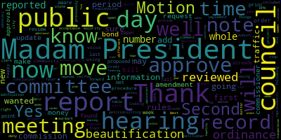
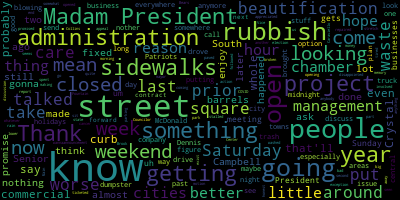
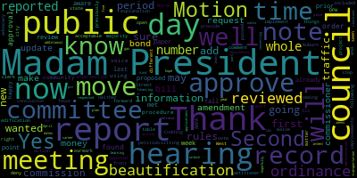
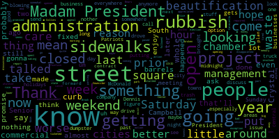

total time: 7.13 minutes
total words: 1128

total time: 2.82 minutes
total words: 561

{kind=link}
total time: 0.92 minutes
total words: 145
{kind=link}
total time: 4.32 minutes
total words: 779

[Morell]: Vice President Bears, how did you find the records?
[Bears]: Madam President, I found the records in order and I move approval. Second.
[Morell]: On the motion by Vice President Bears to approve second by Councilor Knight. All those in favor? Aye. All those opposed? Motion passes. Reports of committees, 22-012, April 26, 2022, Committee of the Whole. This is our rules meeting. We discussed the, this was rules, correct?
[Bears]: Yes.
[Morell]: This was on the council rules. We discussed the language as far as codifying virtual attendance as needed, as well as the potential for bi-weekly meetings that will come up next week on the agenda. Motion on the floor.
[Bears]: Motion to approve the report.
[Morell]: On a motion of vice-President Bears to approve the report, seconded by Councilor Knight. All those in favor? Aye. All those opposed? The motion passes. 21.057, April 27, 2022, Subcommittee on Climate Sustainability and Transportation. So this was a subcommittee meeting to discuss a draft of a potential regulations around leaf blower use within the city. And the committee voted to send it to a committee of the whole, which we'll be having later this month. Second. On the motion of Councilor Scarpelli to approve, seconded by Vice President Bears. All those in favor? Aye. All those opposed? Motion passes. 2-0-006 April 27, 2022 Subcommittee on Ordinances and Rules. Vice President Bears.
[Bears]: Yes, this was on the beautification ordinance, proposed beautification ordinance. We reviewed it with council last week. We just met prior to this meeting and reported out a number of amendments and reported the paper out to committee of the whole, as well as for review by council. And I would move to approve the report.
[Morell]: On the motion of Vice President Bears, seconded by Councilor Knight. All those in favor? Aye. All those opposed? Motion passes. Moving on. Announcements, accolades, and reminiscences. 22-340 offered by Councilor Collins and Councilor Tseng. Be it so resolved that the Medford City Council recognize Massachusetts Walk, Bike, and Roll to School Day. Councilor Collins.
[Collins]: Thank you, President Morell. I'm excited to recognize Walk, Bike and Roll to School Day, which is the first Wednesday in May. It's tomorrow. It's a project of the Massachusetts Safe Routes to School program. I was thrilled to be contacted by one of the community members who's organizing celebrations in the form of, you know, group walks to school routes over the course of this whole month on Walking Wednesdays, so I think it's a great time to reflect on how important it is to, you know, in terms of the program goals and still healthy behaviors in our youngest constituents, and also a time to reflect on what we can do on an infrastructural and policy level to ensure that there are always safe, accessible, convenient walking, biking, and rolling routes to schools and every important public place in our community. Thank you.
[Morell]: On to legal notice to the Medford Community Development Block Grant Program, Program Year 48 Annual Action Plan public hearing. A public hearing will be held by the Medford City Council on Tuesday, May 3, 2022. Details will be posted by the City Clerk's Office prior to the hearing. The purpose of this public hearing will be to invite the general public and representatives of public service agencies to express comments regarding the City's Community Development Block Grant Annual Action Plan for Community Development and Planning. The action plan contains the proposed use of Community Development Block Grant funds for the program year which extends from July 1 2022 through June 30 of 2023. The Office of Planning, Development, Sustainability will be requesting that the Medford City Council authorize Mayor Breanna Lungo-Koehn, official representative of the City of Medford, to submit the annual action plan application for funds and all other assurances and certifications to the US Department of Housing and Urban Development. The city is applying for an estimated $1,546,988 in block grant funds. Funds are estimated and details on the increasing or decreasing of proposed activities and budget can be found within the draft plan. Call 781-393-2425 for any accommodations, slash aids, TDD 781-393-2516. Signed, Adam Herdevis, City Clerk.
[Bears]: Madam President, point of information. Thank you, Madam President, I just wanted to, I'm sure you may be already aware, but this would fall under the new procedure for public hearings by the rules. And I can just happy to voice that for the community since this is the first time we're using it if that's acceptable. So, now as you just did the petition is right into the record. The second step is that the petitioner will provide an explanation on the matter. then we will open the public hearing for in favor and opposed. And then following the public hearing, we would implement a six day public comment period. The council can also, shall neither approve or deny the hearing until the conclusion of that period, but may waive that by majority vote of the council. So that is the new rules just for the edification of the public. And I will note that we did have a committee of the whole on this previously. So it has been before us. This is not the first time we're seeing it. Thank you.
[Morell]: Thank you, Vice President Bears. At this time, Director Hunt, if you would like to give us a summary presentation. As Vice President Bears mentioned, this was discussed at length in a previous committee as a whole as well.
[Hunt]: Hello.
[SPEAKER_03]: So, so this is a Community Development Block Grant Annual Action Plan. Just name and City Hall address for the record, please. I'm sorry. Just name for the record. Oh, sorry. Ashley Williams, CDBG Administrator. This is the 2022-2023 Community Development Block Grant Annual Action Plan. We're, we're applying for an estimated amount of funds at the moment we've not received that allocation from HUD yet what that's expected sometime this month, but they have asked that we go forward with our timeline to be on track for a July 1 allocation. Planning and administration will be funded at the full 20% of the entire award our public services will be funded at the full 15% allowed the award and then if there's any increase or decrease in the total award, we will take that out of the physical improvements aspect of the plan.
[Hunt]: Alicia Hunt. I'm the director of planning, development and sustainability. This falls under my office. This is an annual process where we present this plan to you, the city council, to the public. It has been open for public comment for 30 days as required and posted on the city's website. So this is the opportunity for the legal public hearing for this this evening.
[Morell]: Thank you, Director Hunt and Administrator Williams. As this is a public hearing, we'll open the public hearing now. Anyone in favor of the petition who would like to speak?
[SPEAKER_05]: Anyone on Zoom would like to speak? Technically, we would be, our office is speaking in favor as the petitioners. Great, thank you. Anyone else like to speak in favor?
[Morell]: Seeing none, closing this portion. Anyone who would like to speak in opposition of the petition before us? Seeing none, this portion of the hearing is closed. Have any discussion from the council?
[SPEAKER_00]: Madam President, this is something we support every year, and a motion for approval.
[Morell]: Would that be a motion to, yeah, waive the waiting period? Okay. Okay, so on the motion of Councilor Harviello to waive the waiting period and approve tonight, seconded by Vice President Affairs, Mr. Clerk, please call the roll.
[SPEAKER_05]: Yes.
[Morell]: Yes. Six in the affirmative, one absent, the motion passes. Thank you all very much. Thank you very much for your time this evening. Motions orders and resolutions to to dash 341 offered by cancer Caraviello be it so resolved that the Medford City Council have the mayor work with the Chamber of Commerce and Waste Management to come with a better plan for rubbish pickups and Medford Square.
[Caraviello]: Thank you, Madam President, um, you know, we talked about, uh, you know, the beautification beautification meeting. But all the businesses put their rubbish out. And again, during the, some of them put them out on Saturday and Sunday and they're there for the weekend. And it gets especially worse on the long weekend holidays. I don't know if you, at the last weekend when we had a Patriots day, if you drove around the square, there was trash blowing everywhere, all over the streets. And you know, I did call Dennis McDonald, he could take care of some, but, and again, this is something I brought up with prior administrations that we have to figure out a way to get this rubbish off the street during business hours. I mean, waste management, it's a 24 hour company, no reason why they can't come by during the, send the truck by at midnight or during the night, like they do in other areas, other cities and towns, just to get the stuff off there. Or, I know in the past, they've talked about putting in a central dumpster somewhere, but again, When you drive through the square and you see rubbish all over the sidewalks and all the streets, it's just not a good look for our city. And it's something that's been a little thing that I've had with the prior administrations also. And I would hope that maybe the chamber and waste management can come up with a better option of getting the commercial rubbish out of there. We're one of the few cities that even does commercial rubbish anymore. But that's that's and that's a whole nother issue and I hope that'll be something that that's that'll probably probably be something to discuss going forward with the next contract to say, if the administration come up with a better plan with the chamber, I'd be appreciated.
[Morell]: Thank you for the discussion. Second, motion of Councilor Caraviello, second by Vice President. I wanna call you Vice President Nitzel. Councilor Knight, I do just wanna thank you for bringing this up. I think one meeting a few months ago after we left, it, you know, it was really a pickup because along- Windy night. Windy night, rainy, and there was just trash absolutely everywhere. And anyone driving through, I don't know how you would think to come back to Medford Square in a day or another night because it was an absolute disaster. So thank you for bringing this forward.
[Caraviello]: It's all part of our curb appeal. that we don't have.
[Morell]: Absolutely. So, on the motion of Councilor Caraviello, seconded by Councilor Knight. All those in favor? All those opposed? The motion passes. 22-342 offered by Councilor Caraviello. Be it so resolved that Manfred City Council have the administration open the Crystal Campbell Fountain at the Senior Center. Councilor Caraviello.
[Caraviello]: Thank you, Madam President. Again, you know, I was there for the opening of that Crystal Campbell Fountain, and I know during COVID we had it closed, but you know, I was at the Senior Center a few weeks ago. They're all looking get that open. I don't know if it's broken, but for whatever reason, and I'm gonna be quite honest, I'm a little disappointed that it wasn't opened during last week, two weeks ago, in memory of Crystal Campbell. Should have been open, I mean, we spent a lot of money on that, and it's been closed for two years and it's still closed now. Seniors, a lot of people go around and sit there. It should be open. I don't know why it's not open. So again, I'd ask that we, that the mayor open it up and get it going so people can again, enjoy it, enjoy the park there.
[Morell]: Thank you, Councilor Caraviello. No further discussion. On the motion of Councilor Caraviello, seconded by Vice President Bears. All those in favor? All those opposed? The motion passes. 22-343 offered by Councilor Caraviello. Be it so resolved that the Medford City Council have the Mayor's Office and the DPW follow up on the City Council's meeting with residents last year of the lower end of Brooke Street and the promises made to them in the interest of public safety. Councilor Caraviello.
[Caraviello]: Thank you, Madam President. I think most of us, with the exception of Councilor Collins, were there on that Saturday morning in the rain with the people, and then they were promised that the sidewalks would be fixed, or even somewhat repaired, and it's almost a year later, and nothing has happened there. Again, it's a bad street, and what's making it worse now, they're getting ticketed for parking on sidewalks that don't exist. So that's where this is coming from. But again, that whole stretch of Brook Street, the lower end, these have sidewalks and curbs, some of the things that they're just getting washed away. And I say, we were all there, we made a promise to those people to take care of it. And it's a year later and nothing's happened. So I wanna know what's going on there and why it's not fixed.
[Morell]: Thank you, Councilor Caraviello. Vice President Bears.
[Bears]: Thank you, Madam President. I would like to also add that same day we also reviewed some requests for improvements. at the Auburn, Codding, North and West Street intersection. I know that didn't end up going to the traffic commission, but now it's sitting there on the table in the traffic commission. So I'm, you know, it's just, we did both of those things the same day. We haven't seen the action on them. I would just request, make a motion or an amendment that we, the city clerk forward the committee report from those meetings to the DPW commissioner as we now, it was a different commissioner at the time. I would just want to make sure that he has the information from that meeting in front of him.
[Morell]: Thank you, Vice President Bears. Any further discussion? On the motion of Councilor Caraviello as seconded by Councilor Scarpelli as amended by Vice President Bears. All those in favor? Aye. All those opposed? Motion passes. 22-344 offered by Councilor Caraviello. be it so resolved that the mayor's office provide the Medford City Council an update on the progress of the plan to address the issues at the intersection of South Street and Main Street. Councilor Caraviello.
[Caraviello]: Thank you, Madam President. Again, this is another project that seems to have stalled. I don't think anybody knows where it is. People are getting tired of looking at the barrels there. I know there was a big announcement that this project is going to get done. South Street is all paved and almost done now. and we're still looking at the barrels. So where are we with this project? I know the state was gonna get involved, but again, I haven't seen any action or anything down there at all. So I'd ask that we get a report of administration, what's going on with that South Street and Main Street project there.
[Morell]: Thank you, Councilor Caraviello. Vice President Bears.
[Bears]: Thank you, Madam President. I can just add that I know thanks to the advocacy of this council, that there was a $500,000 earmark included for this project in the ARPA bill passed by the state legislature. I believe the intent of that was to kind of unlock additional bond money as well in the transportation bond bill. So I just wanna put that out there and then hopefully as part of the update, just get an update on the financing piece of it, because it seems like money is now out there. So. I hope that they can get going on it very quickly.
[Caraviello]: I mean, these are all these are all election year promises made to people, and they're not being followed up on any further discussion on the motion of cancer Caraviello second by Vice President Bears.
[Morell]: All those in favor, I suppose. Passes vacations for the mayor to Councilor Knight, all those in favor?
[SPEAKER_00]: Aye.
[Morell]: Opposed? The motion passes. Public participation. Is there anyone who would like to speak either on Zoom or in person for public participation? Seeing no hands on Zoom, small Zoom crowd tonight. Anyone in person who would like to speak? Seeing none, moving on. That is the end of the agenda, unless folks have any unfinished business they would like to, not sure if anything is due to be taken off. Looks like it.
[Bears]: Madam President, I would just note that there are a number of reports that we've requested from the administration that did have due dates in April of 2022, five-year plan on gas leaks, 90-day report on connecting classroom learning to career applications, as well as presentations on finances and warrant articles. So I just wanted to note that for the record. And I would move to adjourn.
[Morell]: Do you have that, Mr. Clerk, for the record? on the motion of our chosen bears to adjourn seconded by Councilor Knight. All those in favor? All those opposed? Meeting is adjourned.
|
total time: 7.13 minutes total words: 1128 |
total time: 2.82 minutes total words: 561  |
total time: 0.92 minutes total words: 145 |
total time: 4.32 minutes total words: 779  |
{kind=link}